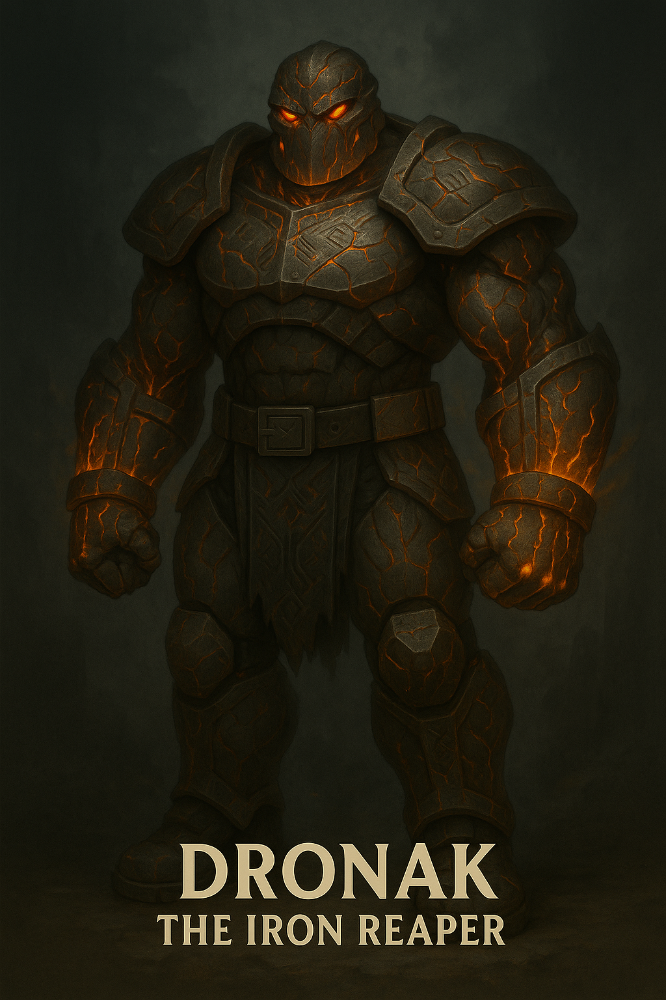

Dronak

Name & Alias: Dronak – The Iron Reaper
Age / Race / Role: Unknown / Myrthorian Enforcer / Heavy Blade Specialist, Execution Unit
Appearance: Muscular, armored warrior with jagged iron blades grafted into his arms. Carries a massive cleaver on his back.
Affinities & Energy Types: Steel, Dark, Physical Domination
Threat Tier: S-Rank
Core Stats (0–10):
• Power: 10
• Speed: 6
• Technique: 8
• Intelligence: 6
• Defense: 9
• Aura Control: 7
Signature Abilities:
• Reaper’s Guillotine
• Iron Wall Sweep
• Crushing Blade Lock
• Execution Surge
• Ruststorm Slam
Personality Summary: Brutal and merciless. Rarely speaks, preferring to let his blade silence others. Loyal only to Sahil.
Faction or Allegiances: Ashborn Circle (Order of the Abyss)